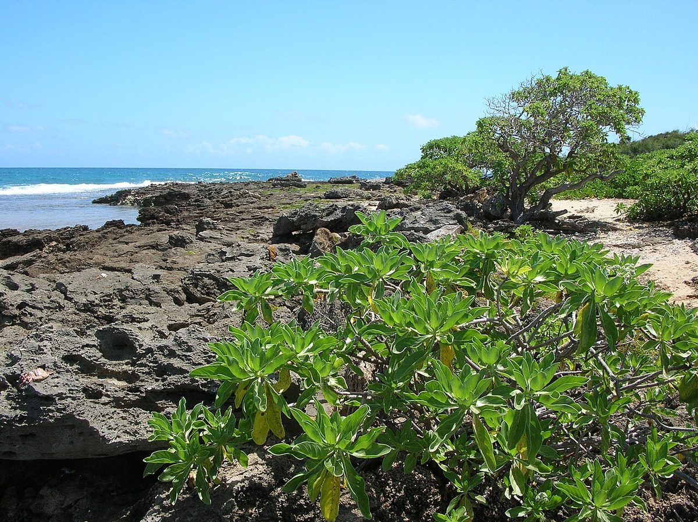
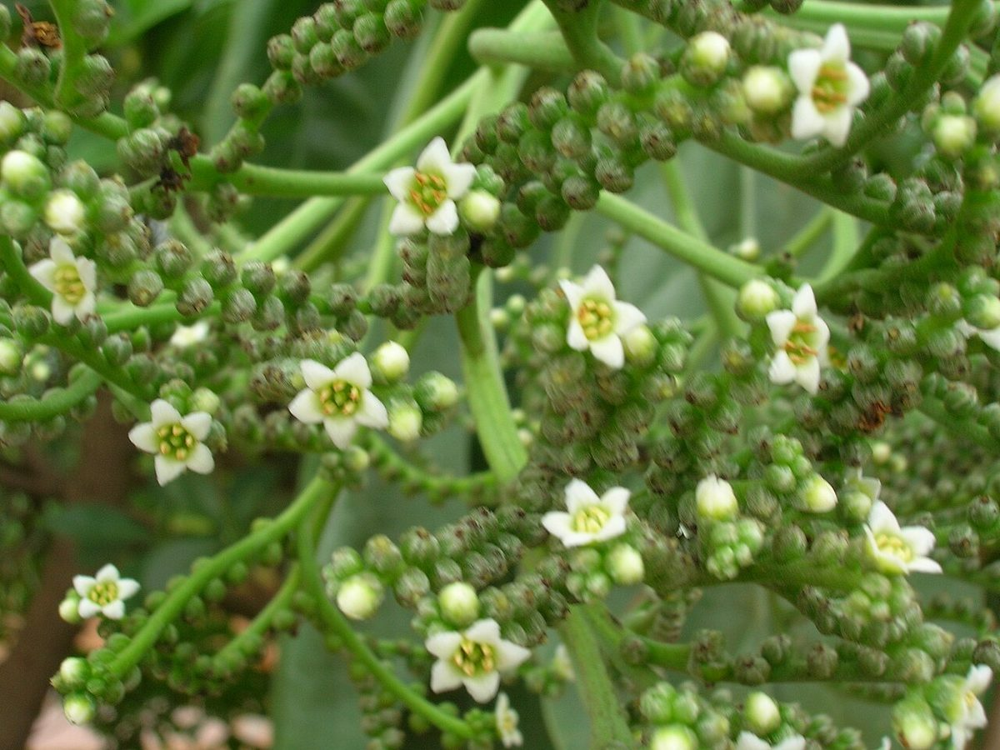

COMMON Beach strand Sea cliff Dune
Heliotropium foertherianum
hinahina kū kahakai, tahinu · tree heliotrope, velvet-leaf soldierbush, octopus bush


Quick facts
| Family | Boraginaceae |
|---|---|
| Scientific name | Heliotropium foertherianum |
| Hawaiian name(s) | hinahina kū kahakai, tahinu |
| English name(s) | tree heliotrope, velvet-leaf soldierbush, octopus bush |
| Status | Indigenous (native, non-endemic) |
| Conservation | — |
| Coastal zones | Beach strand Sea cliff Dune |
| Occurrence | A conspicuous silvery-leaved small tree of Kauaʻi's coastal strand and low sea-cliff shelves. On the roadless coast it grows above the wrack line at Nāpali beaches and on the Māhāʻulepū strand. Formerly placed in the genus *Tournefortia* as *T. argentea*. |
Uncertainty: The biogeographic status of *Heliotropium foertherianum* in Hawaiʻi is most often treated as indigenous (present pre-contact via natural ocean dispersal — its buoyant corky fruit is well-suited to it). Some recent treatments (see Imada 2019 checklist [21]) note ambiguity about whether the earliest Hawaiian records represent a truly pre-Polynesian arrival or an early post-Polynesian introduction. This guide follows Wagner et al. and treats it as indigenous while flagging the discussion.
How to identify
- Growth form
- A rounded, densely-branched small tree or large shrub, 2–8 m tall, with a broad low crown and thick corky twigs. Often grows leaning seaward.
- Size
- 2–8 m tall, crown often as wide as the plant is tall.
- Leaves
- Thick, obovate to spatulate, 8–20 cm long, densely covered in short silky white-silvery hairs that make the whole crown look pale grey- green from a distance. Clustered in dense rosettes at the branch tips. Margins entire.
- Flowers
- Tiny (~4 mm) white flowers arranged along one side of a coiled (scorpioid) cyme resembling a fern crozier that unfurls as the buds open — this cyme shape is diagnostic in the family.
- Fruit / seed
- A small (4–6 mm), corky, buoyant, greenish-white to pale-brown four- parted rounded drupe. Floats and disperses on ocean currents.
- Bark / stem
- Pale grey-brown, thick and slightly corky on older stems.
- Where it sits on the coast
- Immediately above the strand on sandy or rocky substrate, on low sea- cliff shelves, and around lagoon margins.
Clinchers (features that lock the ID)
- Silvery velvety obovate leaves clustered in tight rosettes at branch tips — visible from a hundred metres away.
- Tiny white flowers arranged along one side of a coiled (scorpioid) cyme — a Boraginaceae signature.
- Rounded corky buoyant fruit dispersing on the tide.
- Rounded dense low crown of a small coastal tree.
Look-alikes
- Cordia subcordata (kou) — Kou has broadly ovate, smooth (not silvery-hairy) leaves and showy bright-orange trumpet flowers about 4 cm across — an unmistakable contrast once the flowers or leaves are seen up close.
- Scaevola taccada (naupaka kahakai) — Naupaka's leaves are bright glossy green (not silvery), fleshy but smooth, and its flowers are the diagnostic half-flower rather than the scorpioid cyme of heliotrope.
- Argusia (older Tournefortia relative treatments) — Nomenclatural shuffle only; same plant in older Hawaiian floras under *Tournefortia argentea* or *Argusia argentea*. Modern floras (Wagner et al. supplement, Herbst & Wagner 2004) use *Heliotropium foertherianum*.
Ecology
Salt-tolerant halophyte with buoyant fruits that establish it on pan- tropical strands. Stabilizes back-beach sand, offers windbreak and cover for shore-nesting seabirds, and (like naupaka) forms part of the classic strand shrub matrix. [16], [17], [21], [22]
Cultural significance
"Hinahina" refers to several silvery-leaved coastal plants in Hawaiian usage; hinahina kū kahakai names this species specifically. Framed respectfully; harvesting practices are not covered here.